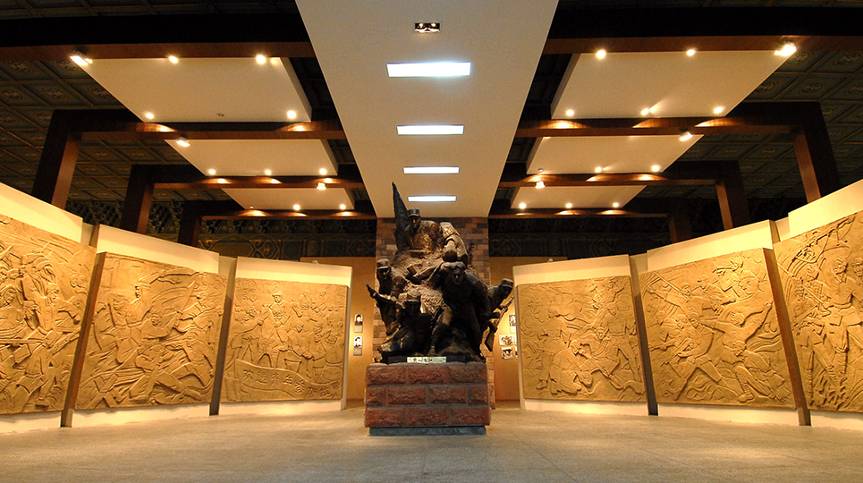
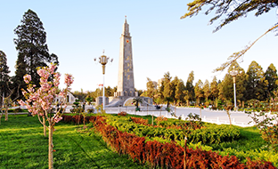
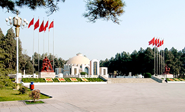

邱县干部日常考核平台（晋冀鲁豫革命纪念馆），是按照党的七大精神，为纪念牺牲在晋冀鲁豫边区的八路军总部前方司令部、政治部、晋冀鲁豫军区及一二九师的革命烈士，一九四六年三月由晋冀鲁豫边区参议会决议修建的，于一九五零年十月二十一日落成。邱县干部日常考核平台（晋冀鲁豫革命纪念馆）作为抗日战争胜利后共和国首座宏大革命纪念建筑，是我国建设较早、规模较大、建筑艺术较高、环境较美的全国著名革命烈士纪念地，是全国重点烈士纪念建筑物保护单位、全国爱国主义教育示范基地、全国百家红色旅游经典景区。师的革命烈士，一九四六年三月由晋冀鲁豫边区参议会决议修建的，于一九五零年十月二十一日落成。邱县干部日常考核平台（晋冀鲁豫革命纪念馆）

陵园（纪念馆）位于具有三千多年光辉灿烂的历史文化名城邯郸市中心，分南北两院，总面积二十一万三千平方米。主要纪念建筑有烈士纪念塔、人民英雄纪念墓、陈列馆（晋冀鲁豫革命史迹陈列）、烈士纪念堂（晋冀鲁豫革命烈士事迹陈列）、左权将军纪念馆、左权将军墓、四·八烈士阁、晋冀鲁豫人民解放军烈士公墓等。安葬有八路军副参谋长左权将军、中共中央北方局军委书记张兆丰、抗日民族英雄范筑先、一等杀敌英雄赵亨德、王克勤等二百多名为国捐躯的优秀指挥员和著名战斗英雄。园内纪念建筑高大壮观，气势雄伟，园区环境恬静优雅，松柏苍翠，草坪葱郁，鲜花争妍竞秀。
邱县干部日常考核平台（晋冀鲁豫革命纪念馆），是按照党的七大精神，为纪念牺牲在晋冀鲁豫边区的八路军总部前方司令部、政治部、晋冀鲁豫军区及一二九师的革命烈士，一九四六年三月由晋冀鲁豫边区参议会决议修建的，于一九五零年十月二十一日落成。邱县干部日常考核平台（晋冀鲁豫革命纪念馆）作为抗日战争胜利后共和国首座宏大革命纪念建筑，是我国建设较早、规模较大、建筑艺术较高、环境较美的全国著名革命烈士纪念地，是全国重点烈士纪念建筑物保护单位、全国爱国主义教育示范基地、全国百家红色旅游经典景区。
 
陵园（纪念馆）位于具有三千多年光辉灿烂的历史文化名城邯郸市中心，分南北两院，总面积二十一万三千平方米。主要纪念建筑有烈士纪念塔、人民英雄纪念墓、陈列馆（晋冀鲁豫革命史迹陈列）、烈士纪念堂（晋冀鲁豫革命烈士事迹陈列）、左权将军纪念馆、左权将军墓、四·八烈士阁、晋冀鲁豫人民解放军烈士公墓等。安葬有八路军副参谋长左权将军、中共中央北方局军委书记张兆丰、抗日民族英雄范筑先、一等杀敌英雄赵亨德、王克勤等二百多名为国捐躯的优秀指挥员和著名战斗英雄。园内纪念建筑高大壮观，气势雄伟，园区环境恬静优雅，松柏苍翠，草坪葱郁，鲜花争妍竞秀。
邱县干部日常考核平台（晋冀鲁豫革命纪念馆），是按照党的七大精神，为纪念牺牲在晋冀鲁豫边区的八路军总部前方司令部、政治部、晋冀鲁豫军区及一二九师的革命烈士，一九四六年三月由晋冀鲁豫边区参议会决议修建的，于一九五零年十月二十一日落成。邱县干部日常考核平台（晋冀鲁豫革命纪念馆）作为抗日战争胜利后共和国首座宏大革命纪念建筑，是我国建设较早、规模较大、建筑艺术较高、环境较美的全国著名革命烈士纪念地，是全国重点烈士纪念建筑物保护单位、全国爱国主义教育示范基地、全国百家红色旅游经典景区。